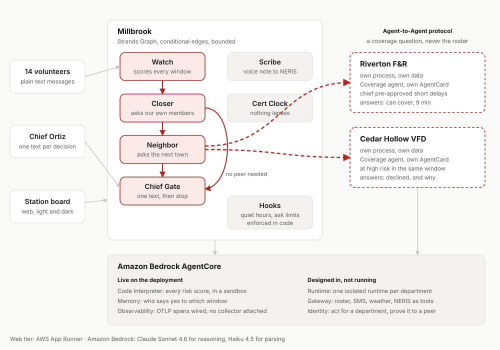

Every other tool tells the chief who is coming. Turnout makes sure someone is.
A background agent for volunteer fire and EMS departments. It finds the hours when nobody can respond, fills them by asking the right people and the right neighbours, and interrupts the chief only for the one decision that needs a human.
4.5 million Americans live more than 25 minutes from an ambulance Built on peer-reviewed volunteer response research Risk scored inside AgentCore Code Interpreter
The station is not empty. It is empty at 2pm on a Tuesday.
Two thirds of America's firefighters are volunteers, and most rural ambulances are staffed by volunteers too. They have day jobs, often 30 miles from the station. The roster looks fine on paper and is empty in the middle of the workday. The chief finds out when the tone drops and nobody answers.
Volunteer firefighter numbers hit a 35 year low while call volume more
than tripled over the same period.
Reference 1
Median rural EMS response is 13 minutes against 6 in cities and
suburbs, across 1.8 million runs.
Reference 3
Survival from cardiac arrest falls by that much for every minute of
delay in response.
Reference 4
Chief Dana Ortiz runs Millbrook Volunteer Fire Company and a hardware store. On Wednesday night she will send the same text to 14 people, call two neighbouring chiefs, and still not know who is covering Thursday morning.
Mutual aid, the practice of neighbouring departments covering for each other, is how the gap gets filled today. It is arranged by phone, and it lands unevenly: some departments quietly become hubs that everyone leans on, and those hubs burn out. Reference 8
The chief keeps every decision. The agent does the chasing.
Roll call by text
Each morning, one message per volunteer: "Around Thu 8a to 5p? Y or N." No app to install, one character to reply. It reads "till 2" just fine.
It sees the hole before it hurts
The agent forecasts which uncovered hours are dangerous using the department's own call history, who is likely to actually respond, and the weather. Every number is shown.
It closes it, then calls the neighbours
First it asks the members most likely to say yes. If that is not enough, its agent talks directly to the neighbouring departments' agents.
One text to the chief
"Thursday 10 to 2: critical. Riverton can cover, 9 minute delay. Approve?" One tap. Nothing is confirmed with a neighbour until she answers.
After the call, the report writes itself
A 30 second voice note in the truck becomes a draft NERIS incident report, with the fields it was unsure about flagged rather than guessed. The chief reviews and submits.
Nobody's certification lapses
Most states require about 24 hours of training a year to keep a certification current. A lapsed card takes a member off the roster, so the agent books the refresher months ahead.
Play the week.
You are Chief Ortiz on Wednesday morning. Press the steps in order and watch the board, the phones, and the negotiation with the next town. No login, nothing to install.
This is not only a scripted demo. Score your own window points the risk engine at your own people and shows every number behind the answer, and set up a department takes a paste of whatever roster you already have.
Millbrook, Riverton and Cedar Hollow are fictional departments and every record is synthetic.
Three things a scheduling app does not do.
Agents that are good neighbours to each other
Each department runs its own agent. When Millbrook cannot cover a window, its agent asks Riverton's agent and Cedar Hollow's agent directly, over an open protocol, and a shared ledger keeps the network fair across a season. A neighbour can answer a coverage question. It can never read our roster.
A risk engine you can read
Not "the AI considered the weather". Real numbers from the department's own call history, published response-probability research, and live weather alerts, shown on every gap and computed as code rather than asserted by a model.
No app for volunteers
A phone number works on every phone, for every member, with zero setup. The chief gets a dashboard. Everyone else gets a text, at most one a day, never during their quiet hours.
What about the tools that already exist?
| Tool | What it does well | What it does not do |
|---|---|---|
| IamResponding | Shows who is responding after a page, plus scheduling and expiry tracking. | It shows the roster after the tone drops. It does not find the gap the day before, or fill it. |
| First Due AI scheduling | Predictive staffing for a single department, aimed at agencies with a budget. | One department at a time. No negotiation with the next town, and no workflow that runs on a plain phone. |
| Aladtec, Vector, ImageTrend | Career department scheduling, overtime rules and records. | Built around paid shifts, not around whether a volunteer can leave work on Thursday. |
| A group text | What most volunteer chiefs actually use today. | Everything. This is the job Turnout takes off the chief. |
Seven agents, three departments, one open protocol.
Each department runs the same agent code with its own configuration, its own memory, and its own published AgentCard. Inside a department the work is a Strands Graph, because a safety workflow has to be deterministic and auditable.

Amazon Bedrock AgentCore
Code Interpreter, live
Every risk score on this deployment is computed there, by the same kernel.py the local path imports, so the two cannot drift.
Memory, live
One memory per department, holding who says yes to which windows. Every answer a member gives is written to it, and the crew page counts how many landed rather than claiming it. Provisioned ahead of time, because creating one takes minutes.
Gateway, designed
Roster, texting, weather and NERIS as tools, with credentials out of agent code.
Identity, designed
Scoped credentials to act for a department, and to prove who you are to a neighbour.
Runtime, designed
One isolated runtime per department. The web tier runs on App Runner today.
Observability, designed
The Trace tab reads the agents' own event stream today.
Hooks
Quiet hours and the weekly ask limit are enforced in code, not by a prompt.
A2A
The open standard that lets one department's agent ask another's for help.
For judges.
Everything the rubric asks for, in rubric order, each linked to the evidence.
| Criterion | How Turnout addresses it | Evidence |
|---|---|---|
| Technical implementation | A Strands Graph with conditional edges inside each department, agents as tools, hooks enforcing contact policy, and real Agent-to-Agent between three separate servers. Six AgentCore services designed in, each for a stated reason, and named honestly as not yet wired in. | Agent trace API and code |
| Design | A complete product: a landing page, a chief's board, the volunteers' texts, a network view, settings, and every screen's empty, loading, error and offline states. Light and dark, phone and desktop, 48px targets, an explanation button on every term. | The product |
| Potential impact | Ten cited sources and a named audience. The demo shows the exact failure being prevented, and the chief's part of it takes eight seconds instead of forty minutes. | The problem References |
| Creativity and originality | Good Neighbor agents that are literally good neighbours to each other, a risk engine written to be read rather than trusted, and a deliberate decision to give volunteers no app at all. | What is different |
| Presentation | A four minute video recorded from this deployment, opening on an empty apparatus bay and ending on one text message and a truck rolling from the next town. | Demo |
Licence: MIT, in the repository root and visible in the About panel. All code was written during the submission period. The only external service is the public National Weather Service alerts API; everything else is AWS.
For developers.
Run it locally in two commands, or call the deployed API with the public sandbox key .
Run it
git clone <repo> && cd turnout uv venv && uv pip install -e ".[dev]" python -m turnout.data.generate uvicorn turnout.api.app:app --port 8000
Then open http://localhost:8000. The agents call Amazon Bedrock, so AWS credentials with Bedrock access are needed.
Call it
curl -H "x-api-key: turnout-sandbox-2026" \
https://<host>/api/gaps
curl -X POST https://<host>/api/reply \
-H "content-type: application/json" \
-d '{"phone":"+15551234567","body":"Y"}'
Full schema at /docs and /api/openapi.json.
| Endpoint | What it returns |
|---|---|
GET /api/state | Everything the board shows: headline, gaps, ledger, members, incidents, interrupt budget. |
GET /api/gaps | Coverage gaps for the next seven days, each with the numbers behind its risk score. |
GET /api/messages | Every text sent and received. Pass ?phone= for one thread. |
GET /api/network | The three departments, the mutual aid balances, and every A2A exchange. |
GET /api/trace | Agent trace events. Pass ?since= to poll for new ones. |
POST /api/reply | Deliver an inbound text exactly as a real phone would. |
POST /api/step | Advance the demo week by one step. |
GET /.well-known/agent-card.json | On each department's A2A server: what that department's agent can do. |
What it will never do.
- It never pages anyone to an incident. Dispatch stays with dispatch. Turnout works on the day before, not the moment of.
- It never commits mutual aid without a chief. A neighbour's agent can auto-approve only inside a rule that neighbour's chief set, such as a delay under ten minutes with the ledger still near balance.
- It never texts a volunteer during their quiet hours, or more than the weekly limit. That is enforced by a hook in code, not by asking a model nicely.
- It never submits a NERIS report on its own. The chief reviews the draft and presses submit.
- It never guesses a number it can show. If the history is thin, the explanation says the estimate leans on a national pattern.
- It stores no location and no health data. Names, phone numbers, roles, certifications, availability and response history, and nothing else.
References.
- NFPA Journal, "Volunteer Fire Service Crisis: U.S. Departments Struggle with Staffing Amid Growing Call Volume", February 2026. nfpa.org
- Maine Rural Health Research Center, "Ambulance Deserts: Geographic Disparities in the Provision of Ambulance Services", 2023. ruralhealthresearch.org
- Mell HK et al., "Emergency Medical Services Response Times in Rural, Suburban, and Urban Areas", JAMA Surgery, 2017. jamanetwork.com
- "Shortening Ambulance Response Time Increases Survival in Out-of-Hospital Cardiac Arrest", Journal of the American Heart Association, 2020. ahajournals.org
- "Predictive Dispatch of Volunteer First Responders: Algorithm Development and Validation", 2023. PMC10716760
- "Planning for time-varying volunteer firefighter systems under probabilistic service disruptions", Transportation Research Part E, 2021. sciencedirect.com
- FireRescue1, "Volunteer fire departments face rising call volumes and staffing challenges in rural Missouri". firerescue1.com
- Capital Area Fire Districts Association, "The Greatest Threat Facing the Volunteer Fire Service is Math, Not Recruitment". cafda.net
- US Fire Administration, NFIRS sunset and the move to NERIS, 2026. usfa.fema.gov
- Gloria Mark, University of California Irvine, research on the cost of interruption and recovery of focus.
- Strands Agents SDK documentation: Graph and the Agent-to-Agent protocol. strandsagents.com
- Amazon Bedrock AgentCore documentation. docs.aws.amazon.com